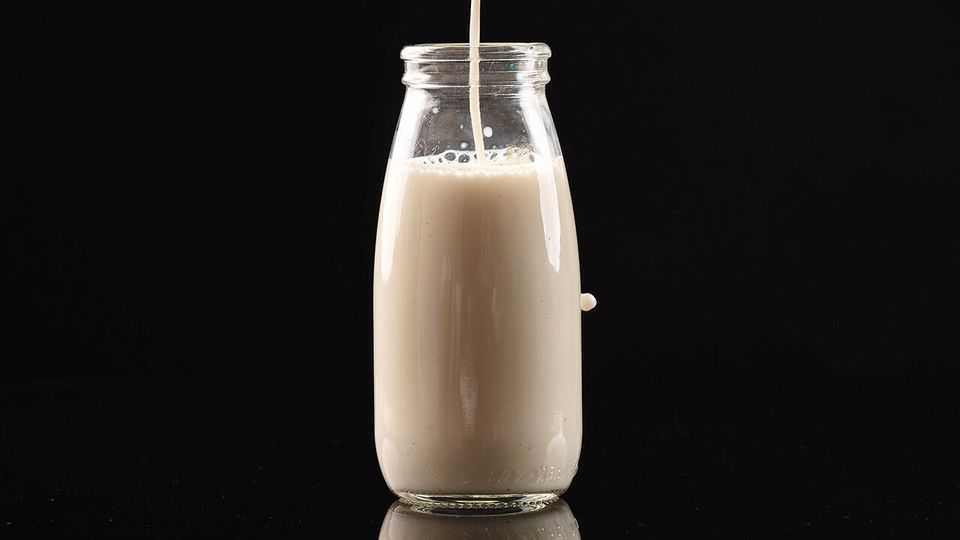

Alternatives to milk are losing moomentum
Consumers are switching back to normal dairy

Sep 17th 2026
Popcorn-flavoured oat milk in your coffee? Or cinnamon roll? Or neither. In the past year the volume of plant-based alternatives to milk sold in America has fallen by 5.4%, according to Circana, a market-research firm. Almond milk, the bestselling variety, dropped by 7.9%. In Britain volumes fell by 2.5% in the year to June; in France, Italy, the Netherlands and Spain growth slowed. Sales of dairy milk, though, are ticking up, after a long decline. Consumers are returning to it, seeing it as better for their wallets and their health.
Alternative milks went mainstream in the 2010s, partly because people perceived them to be friendlier than dairy to the climate. Oatly, a Swedish producer, claims that in Britain its oat milk has only one-third of the climate impact of cows’ milk. But after milk prices dropped in 2023, many shoppers feeling the post-pandemic pinch returned to dairy.
As more people worried about ultra-processed foods and read packaging closely, they spotted gums, oils, sugars and flavourings among alt-milks’ ingredients. Though whole milk contains more saturated fat, alternatives often have more sugar. Cows’ milk has three to four times as much protein as oat milk. At Arla, Europe’s largest dairy co-operative, revenue from high-protein products like quark and skyr has risen by 25% a year since 2024.
Alt-milk makers are also pushing hard on health. Zoe Gardner, head of marketing in Britain for Alpro, Danone’s plant-based milk brand, says its growth strategy is to fortify its milks with calcium, protein, iodine and vitamins. The French firm’s new “Silk Protein” soya milks and yoghurts in North America boast “50% less sugar than regular dairy milk”. Among smaller suppliers, MALK labels its cartons as “gum free”.
John Crawford of Circana compares “converts” to alt-milks to drinkers of Diet Coke. Many are “completely loyal”, he says, treating the drink as a product with its own flavour, rather than an alternative. That may help explain why drinks mimicking cows’ milk have flopped. Both Arla and Danone have dropped failing brands.
Producers of plant-based milks believe novelty is the way forward. Bryan Carroll, Oatly’s general manager in Britain and Ireland, says a mere “alternative to dairy” is not enough. He says new flavours are proving popular, especially with young people. They include popcorn and matcha, a trendy green-tea powder, which has become Oatly’s best-selling flavoured product since its launch in 2025. At Alpro, Ms Gardner says that the success of its cinnamon-roll drink has spurred a new seasonal-flavour strategy.
Milks made from pistachios, pecans and barley are also sprouting on supermarket shelves. Tastewise, which analyses social-media chatter, finds interest in these has risen markedly in the past year. That in oat, almond and cashew has waned. Maybe the new alt-milks will win share from the old, rather than from dairy. ■